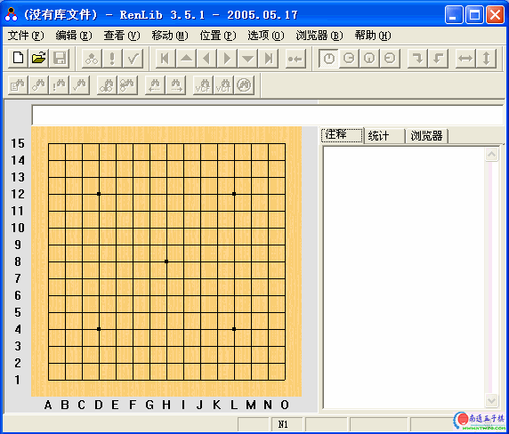

RENLIB3.51中文汉化版
首页
五子棋软件
#1 RENLIB3.51中文汉化版 作者：有志青年 发表时间：2006-1-9 12:04:20

相关附件
#2 Re:RENLIB3.51中文汉化版 作者：飞翔 发表时间：2006-2-18 9:50:58
这个汉化的好 。。原来的都看不懂。。。。
#3 Re:RENLIB3.51中文汉化版 作者：酒鬼 发表时间：2006-8-29 12:07:07
谢谢！
#4 Re:RENLIB3.51中文汉化版 作者：有志青年 发表时间：2006-8-31 21:16:01
打谱必备工具哟
#5 Re:RENLIB3.51中文汉化版 作者：金属玫瑰 发表时间：2006-10-17 12:40:13
多谢
#6 Re:RENLIB3.51中文汉化版 作者：august 发表时间：2006-10-28 19:49:41
请问用这个怎么发上网站上呢
#7 Re:RENLIB3.51中文汉化版 作者：樱花清晨 发表时间：2006-11-5 9:20:53
如何下载,谢谢
#8 Re:RENLIB3.51中文汉化版 作者：youaio 发表时间：2007-1-5 10:56:22
看看
#9 Re:RENLIB3.51中文汉化版 作者：昔日重来 发表时间：2007-1-20 14:42:19
下来试试
#10 Re:RENLIB3.51中文汉化版 作者：tk277 发表时间：2007-1-25 2:09:33
子落月影
#11 Re:RENLIB3.51中文汉化版 作者：dyccj 发表时间：2007-6-5 23:20:13
怎么下呀
#12 Re:RENLIB3.51中文汉化版 作者：富成 发表时间：2007-6-18 12:16:21
富成，谢谢了
#13 Re:RENLIB3.51中文汉化版 作者：walog 发表时间：2007-9-3 12:11:16
hao
#14 Re:RENLIB3.51中文汉化版 作者：阿歌 发表时间：2009-2-4 14:04:55
这个比rena.rar新。